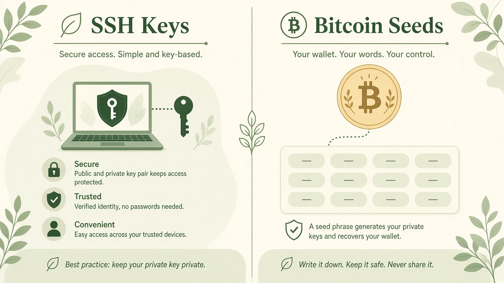

Prefer Ed25519
On a current OpenSSH install, Ed25519 is the usual modern choice: short keys, strong defaults, widely supported. Generate it only on a computer you control, using the tools already on that machine — never a website form.
Teach process only. This site never generates SSH keys, Bitcoin seeds, or recovery phrases. Do not type a real private key or seed into any website — including this one.
Systems keys
An SSH key lets a computer recognize you without a reusable password. The private file stays on machines you trust. The public file is what you place on servers. This page describes that split. It will not create a key.

On a current OpenSSH install, Ed25519 is the usual modern choice: short keys, strong defaults, widely supported. Generate it only on a computer you control, using the tools already on that machine — never a website form.
A passphrase encrypts the private key file at rest. If a laptop is copied, the thief still needs that phrase. Use a long, unique phrase you will not reuse as a website password.
Do not email it, paste it into chat, commit it to git, or upload it to a ticket. If someone else needs access, they make their own key and you accept their public key.
Servers keep a list of public keys (often in authorized_keys). That file is not a secret. Losing the public key is inconvenient; leaking the private key is a compromise.
People typically create an SSH key locally, set a passphrase when prompted, keep the private file in a locked-down folder, and copy only the .pub line to each server or git host. Agent programs can hold the unlocked key in memory so you are not typing the passphrase every minute — that is still your machine, not a browser.
This site will not show a key, check a key, or run a generator. If you need a new pair, use the SSH software on an offline-enough, trusted computer and treat the private file like a house key you cannot reprint from this page.
The public key is an ID badge. The private key is the badge-maker. Share the badge. Never share the maker.